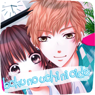

Для тебя мой дом всегда открыт | Come to My Home | Boku no Uchi ni Oide

Оригинальное название: Boku no Uchi ni Oide
Русское название: Для тебя мой дом всегда открыт
Автор: Юки Нати
Жанры: школа, сёдзё, романтика, комедия
Издательство:
Журнал:
Год выпуска: 2012
Томов: 10
Описание: Для того, чтобы быть похожей на обычную школьницу, Миреи устроилась на свою первую работу на неполный рабочий день. Но, едва получив впервые в жизни зарплату... Она чуть не убивает одного молодого богача! Может, эта встреча была предначертана?..
Команда: Cristal Storm
Переводчик:
Корректор:
Клинер:
Тайпер: